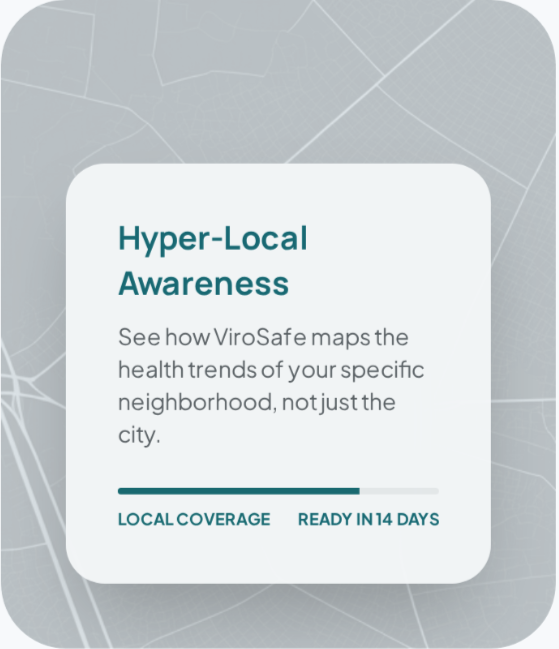
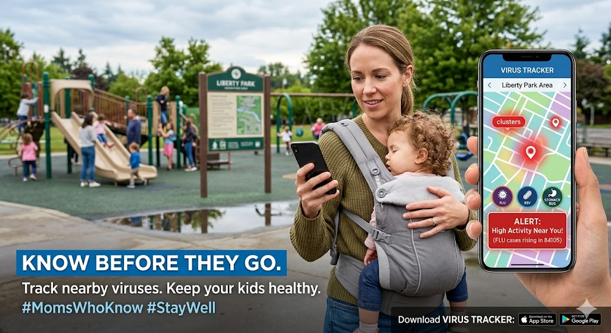
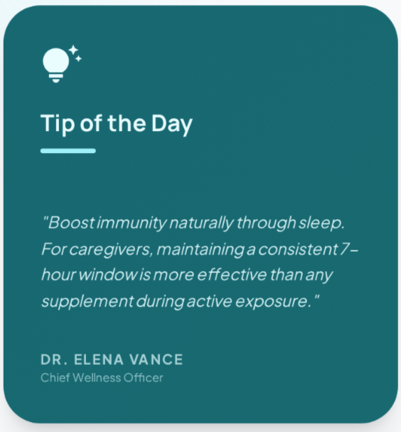
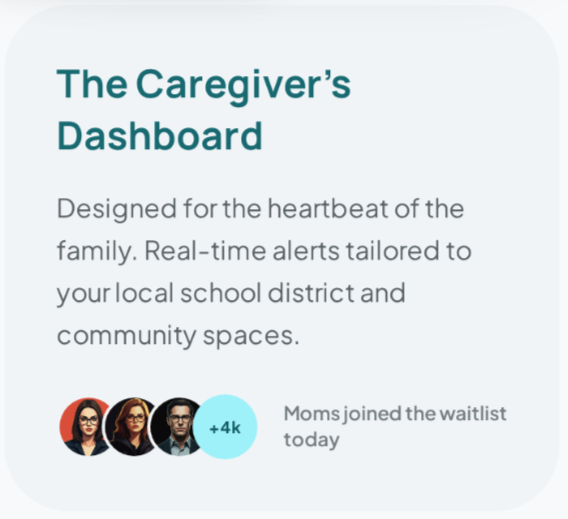
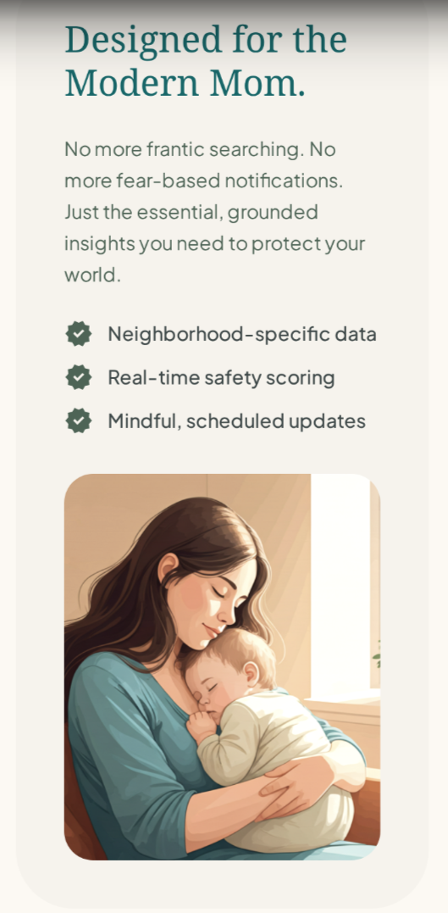
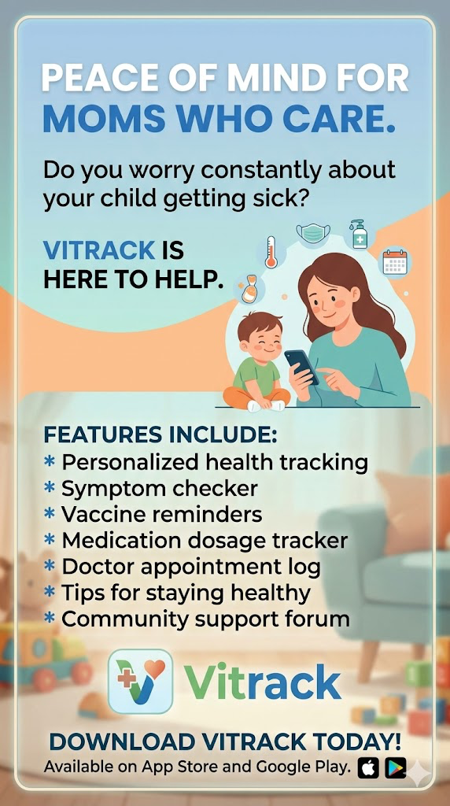

Brand promise
Know what is spreading near you before it changes your plans.
Vitrack turns public-health signals into a quick local read people can use before school, work, or visits.
Marketing presentation
This presentation covers the idea, the gap, the audience, and the launch media.
Section 1
Vitrack helps people see what is spreading nearby without digging through scattered alerts, websites, and dashboards.
Brand promise
Vitrack turns public-health signals into a quick local read people can use before school, work, or visits.
Problem
Most updates are too broad, too technical, or too late for daily choices.
Solution
Vitrack combines outbreak trends, local context, and next-step guidance in seconds.
Brand position
It does not replace experts. It turns expert data into everyday language.
Section 2
Existing tools track data or send alerts, but few make local risk feel simple, calm, and useful.
| Brand | Pricing | What it does well | Gap in the market |
|---|---|---|---|
| Outbreaks Near Me | Free | Regional trend tracking with live updates. | Feels broad and depends on survey-style signals. |
| PHapp | Free | Location-based alerts from agencies. | Useful, but not neighborhood-first or especially personal. |
| Flo / medical alert apps | Paid | Strong personalization and ongoing monitoring. | Not built to explain community virus conditions simply. |
| Vitrack | Low-cost or ad-supported | Calm local snapshot with practical guidance. | Wins on simplicity, locality, and everyday usefulness. |
Section 3
Vitrack reduces uncertainty by turning scattered local health signals into one quick read.
Primary persona
She manages work, kids, and often older relatives. She wants fast information that feels simple and familiar.
Value proposition
Vitrack replaces guessing with a local risk view and plain-language guidance before plans change.
Motivations
Pain points
Segment view
Section 4
Start with Facebook, support with Instagram, and use peer sharing for early traction.
Neighborhood-first tracking instead of broad city averages.

A real-world moment that makes the value feel immediate and relatable.

Short expert guidance that feels useful, calm, and easy to save.




Conclusion
The opportunity is not more data. It is clearer local guidance people can actually use.
Best-fit audience
Start with parents and caregivers who value speed, clarity, and practical context.
Strongest advantage
Competitors track or alert. Vitrack translates that signal into calm daily guidance.